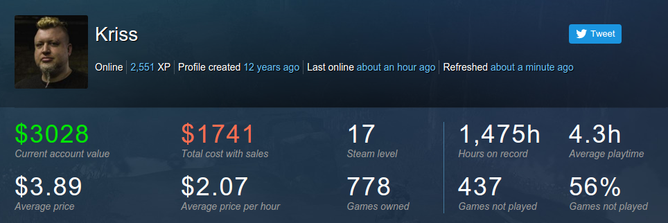

https://twitter.com/mrfavus/status/697499138276065280 @mrfavus yup, @shi and I just committed ourselves to be in a fixed pub on a fixed day once a month for two hours. That's all it takes.
This is your final half hour reminder. #Bradford #Gamedev meetup in a pub from 7pm tonight. #BDdonk

They said "You have to plan for retirement!" and I said "Why do you think I own so many unplayed steam games?"

https://twitter.com/barog/status/697379104488710144 @barog @shi Cool will see you there.
https://twitter.com/wetgenes/status/697154006033047552 @englandrp BTW its not as polished but if you are looking for a partial fix that probably wont eat your life try http://store.steampowered.com/app/290410/
https://twitter.com/englandrp/status/697152299479756804 @englandrp I meant the first remake one, as they are kinda different. But yes same here. The remakes are simpler but catch the essence well.
https://twitter.com/englandrp/status/697114618272075779 @englandrp I would describe it as a further refinement of the series, so if you liked the first one then yes it is :0
I want to watch Gerry Andersons UFO whilst playing XCOM2 but I'm getting more of a, everyone dies, Blakes 7 vibe from the game. What do?
Burnt on the outside, raw on the inside, a sprinkle of sugar and squirt from a fake plastic lemon. Just like god intended.
So much Shiren, so little engrish. https://twitter.com/PlayStation/status/696755815504433152
https://twitter.com/wetgenes/status/696747793914970112 @wetgenes Also I should include @magic_bane @Smirkenorff @jawltd in the list of bradfordish people to remind on twitter :)
@CharlotteGore @GrimSpence @DaveParkinArt @desktopdaydream @IcepickInTheory @nachimir This Wednesday FYI :)

https://twitter.com/barog/status/696744412823457794 @barog @shi Yup this Wednesday,, BTW in terms of Bradford peeps to invite. do you know anything about http://fullboar.co.uk/ ?
https://twitter.com/StooCambridge/status/696653381033730048 @StooCambridge I believe you should be employed as an artist for @dndn1011 kickoff revival, thereby thoroughly confusing everyone :)
This is your twitter reminder that the #bradford #gamedev meetup in a pub is this wednesday, all welcome :)

@RichPantsOn It's not really that much, take a look in the linked pdf :) http://www.usborne.com/downloads/books/1980s-computer-books/write-your-own-fantasy-games.pdf
I remember having this one, I don't remember successfully typing in the listing...
http://www.usborne.com/downloads/books/1980s-computer-books/write-your-own-fantasy-games.pdf

https://twitter.com/wetgenes/status/695933840066482176 @sgtruck Since I've usually just rebooted into windows anyhow, big picture mode is probably an improvement...
https://twitter.com/sgtruck/status/695914304734892033 @sgtruck I think I can probably live with that, I tend to switch to big picture mode whenever I play something via a controller anyhow.